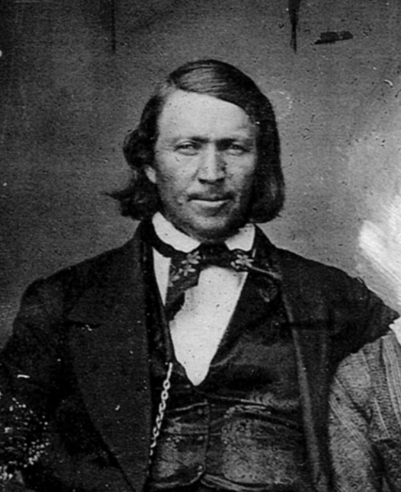

Few have been as influential in the history of the American West as Brigham Young, first governor of the Utah Territory and second president of The Church of Jesus Christ of Latter-day Saints. His legacy was both institutional and doctrinal. As leader of a faith comprising tens of thousands at the time of his sustaining, President Young led the Latter-day Saint migration to Utah and directed the settlement and development of Salt Lake City and numerous other communities. Communities founded under his direction included Ogden, Provo, Manti, Brigham City, and St. George in present-day Utah, Las Vegas in Nevada, and San Bernardino in California.
Due to his role directing the Latter-day Saint exodus from Nauvoo and their subsequent journey across the Plains into the Rocky Mountains, President Young has often been compared to Moses of the Old Testament, who directed the Israelites out of Egypt and safely to the promised land.
President Young was instrumental in carrying the work of temple-building forward after the death of his predecesser, Joseph Smith. He oversaw the completion of the Nauvoo Temple, before the Saints were pushed out of Illinois, then, in Utah Territory, broke ground for the Salt Lake Temple, St. George Temple, Logan Utah Temple, and Manti Utah Temple. During his lifetime, he also oversaw the Endowment House in Salt Lake City. He was responsible for turning Joseph Smith's temple ordinances into a standardized, institutional system that could be received by all the Saints. After the death of Joseph Smith, he directed endowment ordinances in the unfinished Nauvoo Temple. He and the Twelve administered endowments and sealings to roughly 5,500 Saints in just two months leading up to the exodus. At St. George in 1877, he also introduced, for the first time, endowments for the dead. Finally, late in life, Young was responsible for directing that the endowment ceremony be put into a consistent written form to be used across Utah temples.
Speaking on the importance of constructing Temples, Brigham said:
"But be assured, brethren, there are but few, very few of the Elders of Israel, now on earth, who know the meaning of the word endowment. To know, they must experience; and to experience, a Temple must be built."
Education was another point of immense doctrinal significance to the Prophet. He saw academic excellence as essential to the growth of Zion. In 1850, under his direction, the Deseret Territory's Board of Regents established the University of Deseret - later the University of Utah. About 25 years later, in 1875, he personally established the Brigham Young Academy in Provo, which would later become Brigham Young University, the flagship school of the Church Educational System.